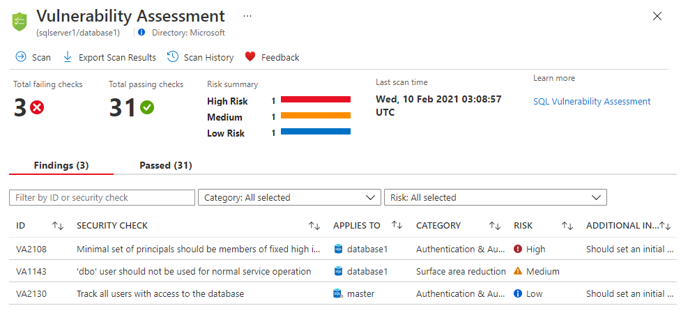

VA scanners for patch management: good or bad?¶

Nowadays (hopefully) all companies are executing regular vulnerability assessments. They often use different partners/tools each year and they often limit themselves to vulnerability assessments.
VAs are not the end of a security strategy, they are just a small step at the beginning. And changing providers every year is not as useful as you think: in my opinion, there are more cons than pros.
VAs do what has defined in the name: a vulnerability assessment. VA scanners just find and count network vulnerabilities. Once you have a VA report, you are doing vulnerability management, not patch or application life cycle management: those are different, concatenated processes.
Let me say again:
VA scanners are used in vulnerability management, not patch management.
And:
VA scanners are used in vulnerability management not in application life cycle management.
We mentioned three different processes:
- Patch Management: it's about updating software to currently supported versions.
- Application life cycle management: it's about disposing of or migrating legacy end-of-life applications.
- Vulnerability management: it's about reducing the risk of known vulnerabilities.
Patch management¶
Patch management is the process of distributing and applying updates to the software. Patches correct errors (bugs) and sometimes bugs can lead to security issues (vulnerabilities). For the sake of this post, we are focusing on vulnerabilities: the bugs that can affect confidentiality, integrity, and/or availability (CIA). The same attributes are used in GDPR (Art.32.1.b):
the ability to ensure the ongoing confidentiality, integrity, availability, and resilience of processing systems and services;
The patch management process should describe:
- how to be notified of a new software update;
- how to evaluate the risk of installing or not installing the software update;
- the SLA associated with the risk from the previous step;
- how to request the installation of the software update.
Examples:
- CVE-2019-0708 (Bluekeep): remote code execution vulnerability with CVSSv3 score of 9.8 for Microsoft Windows RDP
- CVE-2020-2021: authentication bypass vulnerability with CVSSv3 score of 10 in Palo Alto Networks GlobalProtect.
The first vulnerability affects Microsoft Windows systems with enabled RDP, the second one affects Palo Alto Networks GlobalProtect with enabled SAML authentication.
Which is the associated risk?
Of course, it depends... It depends on the vulnerable assets: where they are (network location), how they are protected (security measures), the "value" they have for the organization itself... That information is stored in the asset inventory and governed by the asset management process.
Examples:
- We have a vulnerable and exposed Palo Alto Network firewall with GlobalProtect, impact is high, likelihood is high (public exploit available) and there is no mitigation: the risk is severe.
- We have several vulnerable Microsoft Windows in the industrial network. The network is restricted and protected by a firewall with an IPS feature. We cannot upgrade those endpoints, impact is high, likelihood is high (public exploit available): risk is maximum but it's mitigated by the firewall by 80% (risk is low).
Most organizations implement time-based patch management. In other words, they declare they patch everything every 6 months. In many cases, this is wrong because:
- any organization has something that cannot be patched or disposed;
- there is always some urgency that delays the updating process.
Moreover in the above example, there is no patch for the Palo Alto Network vulnerability, thus the vulnerability cannot be mitigated by the patch management process.
Acting in this way leads to unmanaged risk (see conclusions).
Application life cycle management¶
Application Life cycle Management (ALM) covers several different aspects of applications from its initial planning through retirement. For the sake of this post, we are focusing on updating and retirement phases.
Simplifying applications and their components must be updated. When (not if) components will become obsolete, the application must be updated to support updates or different components. In the real world, when components are retired, the application is not updated anymore: after years nobody knows how to change the code.
Finally, at the end of their life applications must be retired. In the real world, applications are retired when nobody is using them anymore, and that can takes years.
Vulnerability management¶
Vulnerability management is the process to evaluate the risk of known vulnerabilities and how to mitigate them. Security assessments (including Vulnerability Assessments, Penetration Tests, Attack Simulations...) are the tools used to discover unknown vulnerabilities. Another important input of the vulnerability management process includes the security feeds.
The output of any security assessment is a list of prioritized actions required to manage the risks of discovered vulnerabilities.
Many companies use VA as the basis of patch management. Once the VA has detected vulnerabilities, they are analyzed, evaluated, and patched.
That is a pretty common approach I find in enterprises and it's the faster way to understand what is in place and plan remediation. But if you are using VA in the patch management process consider that:
- you are discovering vulnerabilities only after the VA;
- in the worst-case scenario you are vulnerable from the day after the previous VA until the next one (unmanaged risk).
Without a vulnerability management process, organizations running VA yearly can lead to unmanaged risk for 12 months (see conclusions).
VA scanner limits¶
Please be aware that:
- Network vulnerabilities are just a minor part, you should also look for local vulnerabilities. Local vulnerabilities are used for privilege escalation after the attacker has gained local access, maybe using malware or a custom vulnerable application (e.g. Log4j.
- VA scanners look for known, signature-based vulnerabilities. Sometimes they try to analyze web applications (DAST) but they will never recognize uncommon or custom applications. For example, VA scanners don't detect all vulnerabilities in WordPress, and Joomla... applications. You need to use specialized scanners (e.g. wpscan).

Conclusions¶
VA scanners are great tools to quickly find out what is running within the organization and the associated vulnerabilities. Even if VA is executed every month, a critical vulnerability can put the organization at risk for one month (worst case scenario). Sometimes it is acceptable, sometimes not. If we cannot define it clearly, it means that we are not properly managing the risk.

VA scanners are still a fundamental tool for organizations, and they are the fast path to assessing unknown environments. But after a while organizations should introduce vulnerability management together with patch management: monitoring security feeds reduces the risk of newly released vulnerabilities in days, not months.
For severe vulnerabilities, we can assume that patches must be installed within 24 hours. In the example above, the request for change requiring the patch from Palo Alto Networks has high priority. The patch from Microsoft Windows can be skipped because the risk is lower than the risk appetite (and also because updating HMI is a mess).
If everything is going fine, VA scanners won't find severe vulnerabilities. In practice, if the above processes are in place, vulnerability assessment verifies that critical patches are installed and obsolete applications have been retired.
Moreover, if you are changing the VA provider every year, you should ask if it makes sense, considering:
- most of the partners are using VA scanners from two or three vendors;
- it isn't so easy to automatically compare KPI between different software;
- the value is not from the automatic VA report, the value is after that (risk analysis, remediation plan).
And, finally, if you are executing the n-th yearly VA and nothing more, you are not managing the Cyber risk at all. You are just following some odd guidelines. Sad but true.